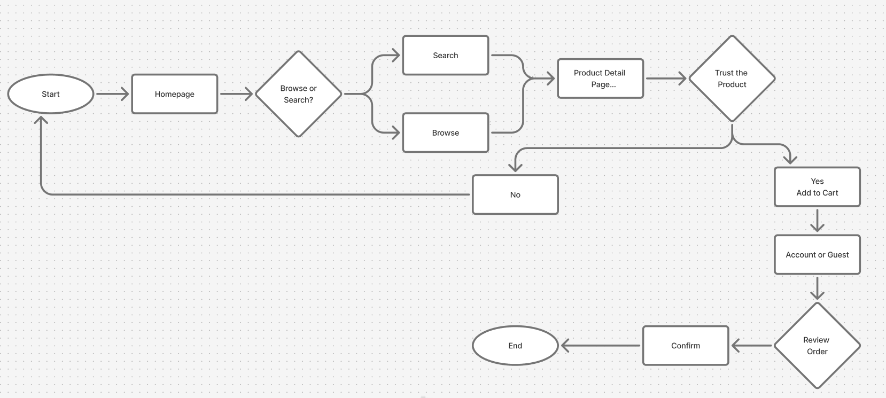
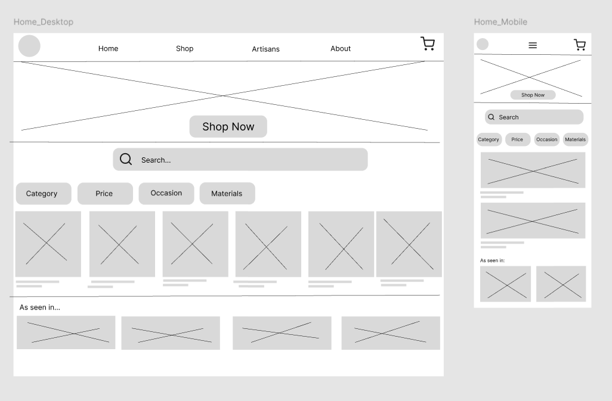
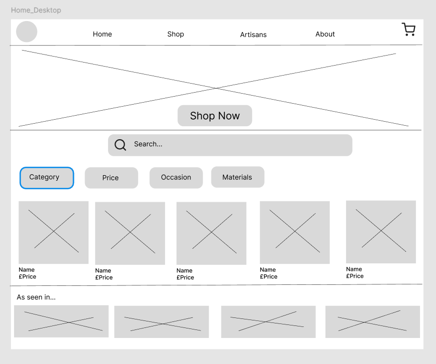
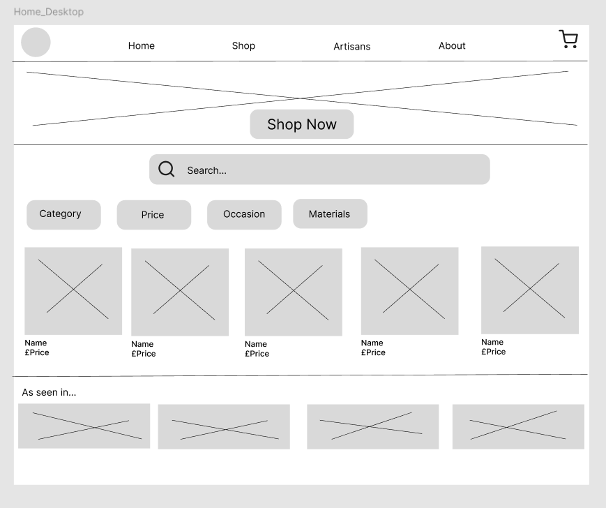
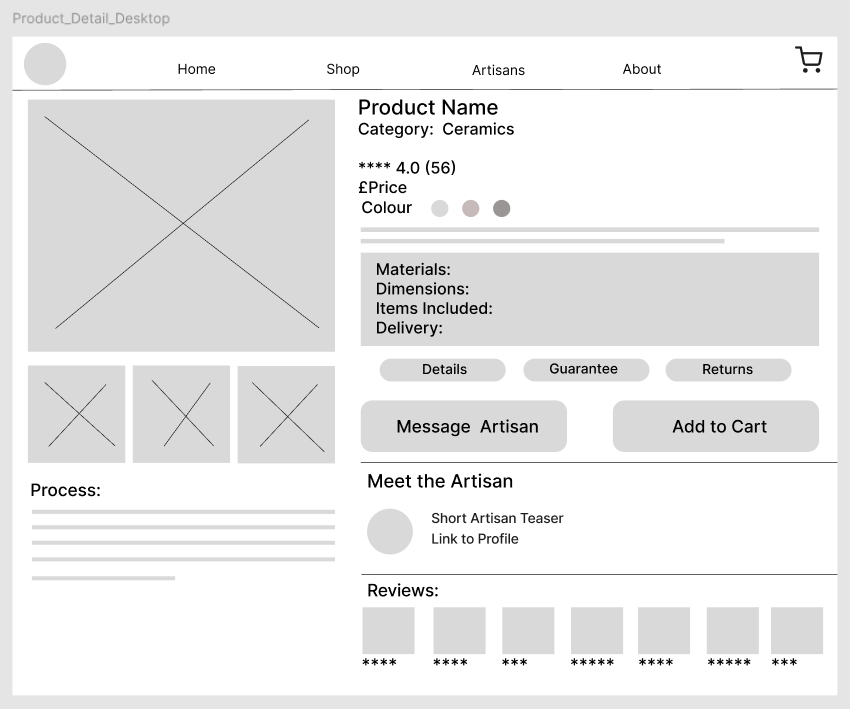
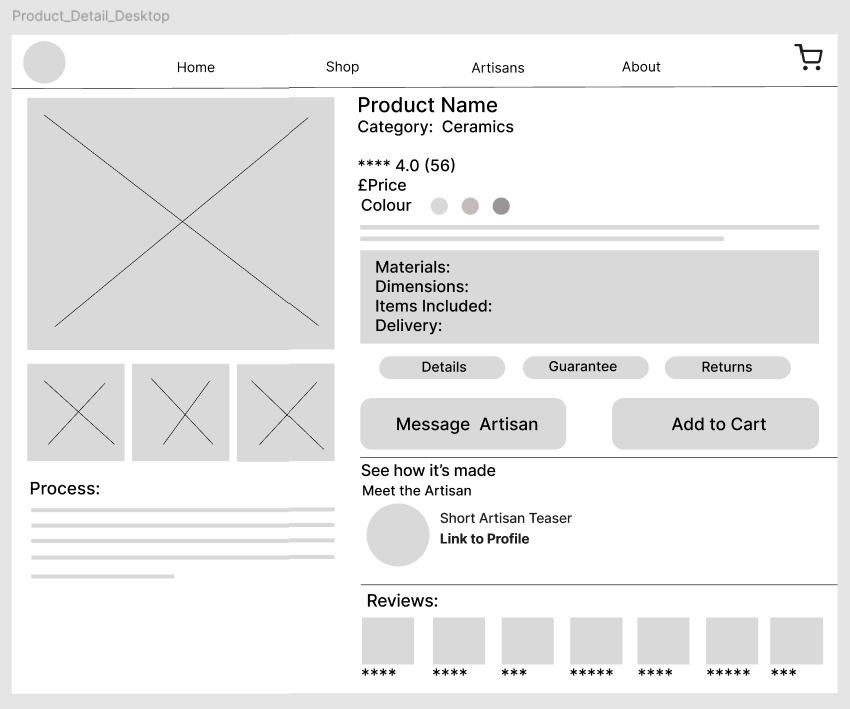
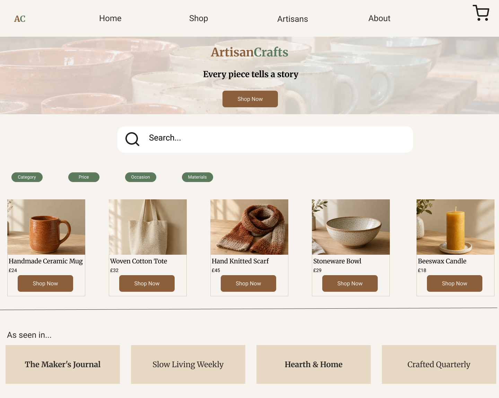
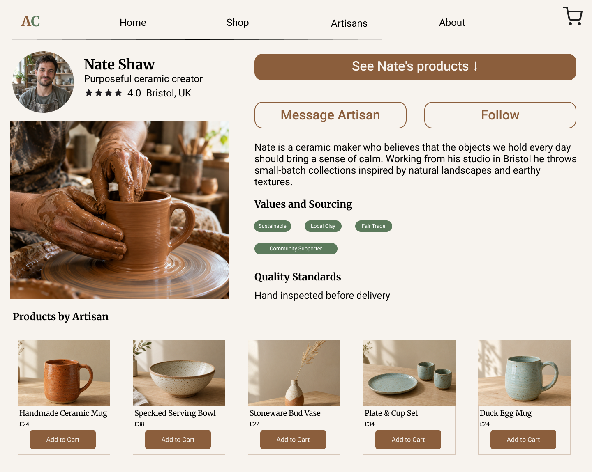
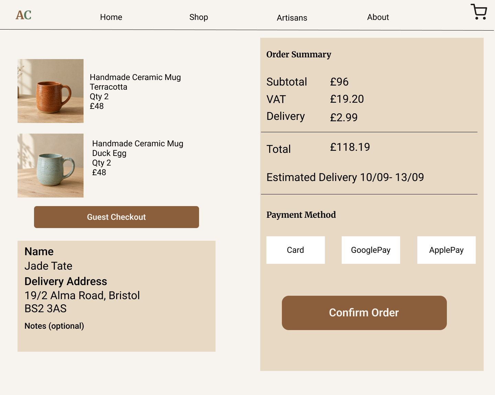
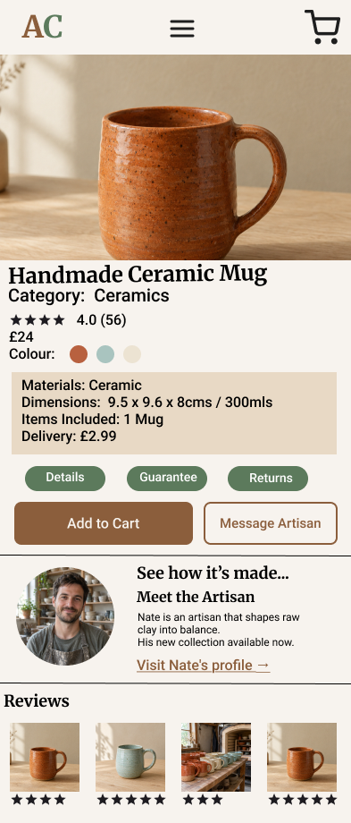

The Brief
From pop-up markets to online
ArtisanCrafts sells handmade goods at seasonal pop-up markets and on social media. The founder wanted an online shop that could reach customers across the country without losing what makes the products special: the people who make them.
What the shop had to do
- Tell the stories behind the artisans and how they work
- Present the products well enough to justify a premium price
- Earn the trust of buyers who care where things come from
- Make browsing and checking out easy on both desktop and mobile
The constraints
Only four screens, each designed for desktop and mobile. ArtisanCrafts has no developers of its own, so the handoff had to be clear enough for an outside team to build without asking questions. And the design had to be accessible and able to grow beyond those four screens.
Research
Meeting Olivia
From the interview I built a persona: Olivia, 34, a "conscious gifter". She buys handmade gifts a few times a month, mostly on her phone, and wants every gift to feel personal. She does her homework before buying, and a shop has to earn her trust.
What she wants
- Unique gifts that feel meaningful
- To know an item is really handmade and ethically made
- A quick checkout with no surprises
What puts her off
- Not being able to judge quality from photos
- Missing details like materials and size
- Shipping costs that appear only at the end
- Being forced to create an account
"Hidden shipping costs that pop up at the very end are a major reason I abandon a cart."
What others do
I compared Etsy, UncommonGoods and Pinterest's shopping features. Etsy has huge choice, but listings look alike and it's hard to tell real handmade from mass-produced. UncommonGoods curates beautifully for gift buyers. Pinterest is where people find inspiration, but they buy somewhere else. The gap for ArtisanCrafts: a small, curated shop where the maker's story sits right next to the product.
Three questions to answer
- How might we help Olivia feel confident that an item is genuinely handmade?
- How might we show her the full cost up front, without forcing her to sign up?
- How might we connect her with the maker, so the gift feels worth a premium price?
Structure
Deciding what comes first
With only four screens, I used a prioritisation matrix to sort features by value and effort. The quick wins went in first: a box of key details next to the price, a "Meet the Artisan" link on every product, guest checkout and the full cost early on. Reviews with photos and a gift guide were valuable but bigger pieces of work, so I saved them for later. I left out a wish list on purpose: it needs accounts, which clashed with the guest checkout Olivia wanted.
Four screens, one journey
Home, Product, Artisan profile and Checkout. The key moment in the flow is the product page, where Olivia decides whether she trusts the item enough to buy it.

User flow, with the trust decision on the product page
Design
Wireframes, desktop and mobile
I sketched first, then built wireframes for all four screens in both sizes. On mobile, the menu folds into a hamburger and the filters become a row of chips you can scroll sideways.

Key decisions
- Details next to the price. Materials, size, what's included and delivery cost, so Olivia doesn't have to hunt for them.
- The maker on every product. A "Meet the Artisan" section with a photo and a link to their profile.
- Guest checkout. No account needed for a first purchase.
- No surprises. Delivery and VAT are shown in the order summary before she confirms.
Testing and Iteration
Testing the prototype
I linked the wireframes into a clickable prototype and ran two simulated sessions, walking through it as Olivia and as a less experienced gift buyer. There were three tasks: find a product with a filter, check its details and the artisan, then buy it as a guest.
Filters that were easy to miss
The tall banner pushed the filters down, and one participant scrolled past them. I made the banner shorter so the search bar and filters sit in the first view.


An artisan link nobody noticed
One participant only found the artisan's profile when asked. That matters, because the maker's story is the whole point of the shop. I added "See how it's made" above the section and made the profile link bold.


Rating what to fix first
I rated each issue from 0 to 4 for severity. Both issues above were a 3: they didn't stop anyone, but they sat on the two journeys the business depends on, finding products and trusting the maker. A third, smaller issue was an optional Notes field at checkout that looked required. I rated it a 1 and left it for later.
The Final Design
Warm, crafted and calm
I built a style guide and component library first: a clay brown, warm beige and sage green palette, Merriweather for headings and Roboto for text, and reusable buttons, inputs, product cards and badges. Every screen is built from those pieces. The product and artisan photos are AI-generated.

Home

Product: details next to the price, the making process, and the maker one click away



The product page on mobile
Handoff and What I Learnt
Ready for developers
With no in-house team, the Figma file had to speak for itself. I named every screen consistently (Screen/Product/Desktop and so on), documented the colours, type, spacing and components in the style guide, annotated the key interactions, and added a one-page developer overview of the goals, layout and navigation.
What I'd do with real users
I'd interview five or six real buyers, ideally customers from the pop-up markets, and test the prototype with them in person. Once live, I'd watch two numbers most closely: how many people add to cart from the product page, and where people drop out of checkout. Those map directly to Olivia's biggest worries.
What I learnt
Understanding the problem and the users is the most important thing when designing a product for people to use, enjoy and make their lives easier. Every decision in ArtisanCrafts, from the details next to the price to guest checkout, came straight from what Olivia needed.